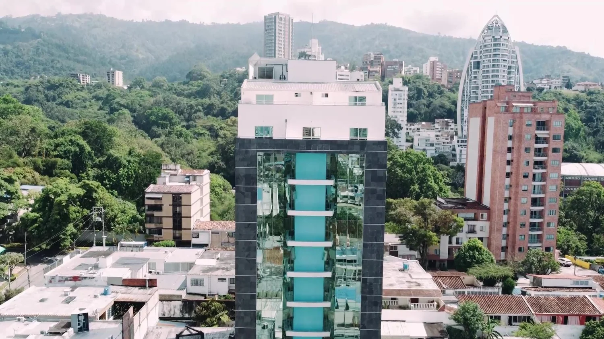

A CLOSER LOOK AT YOUR SMILE
Small details. Your own character.
Smile design
A personalised assessment of dental shape, colour and the overall expression.

A personal conversation about your smile and facial harmony. Discover Dra. Silvia Hoyos in Bucaramanga, Colombia.
Discover ↓A personalised assessment of dental shape, colour and the overall expression.

Explore facial-aesthetic options with a professional assessment and realistic expectations.
Dra. Silvia Hoyos focuses her practice on dental aesthetics and orofacial harmony. Her published services also include oral rehabilitation and dental implants, with care defined through assessment.
Official practice website ↗
A glimpse of the real spaces shared by the practice. Your visit starts with a thoughtful, individual assessment.
Booking preview · no real appointment is reserved.
Cra. 37 #52-43 · Ed. 37 VIP Center · Oficina 1102 · Bucaramanga
WhatsApp +573152562378 ↗Official practice website ↗